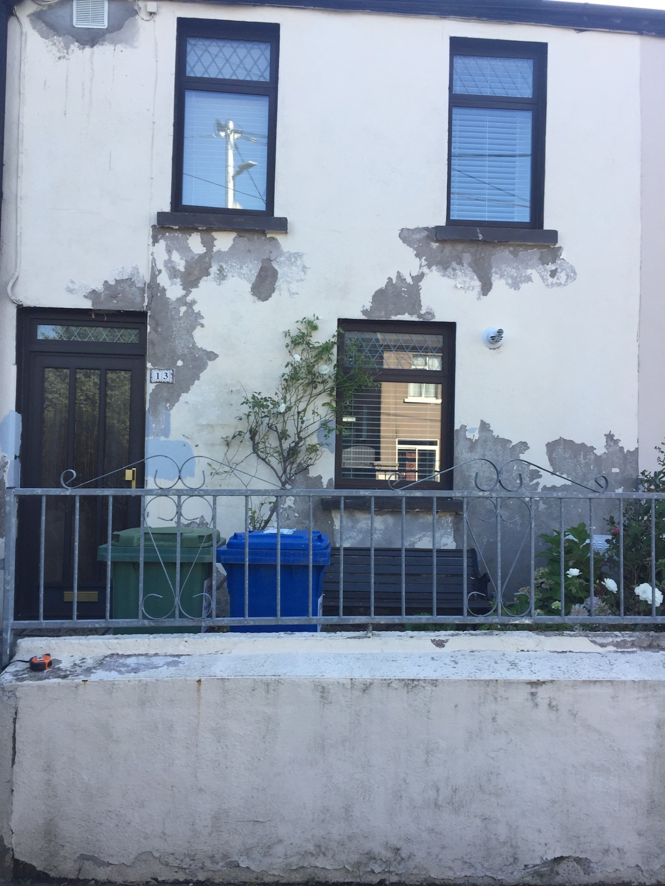
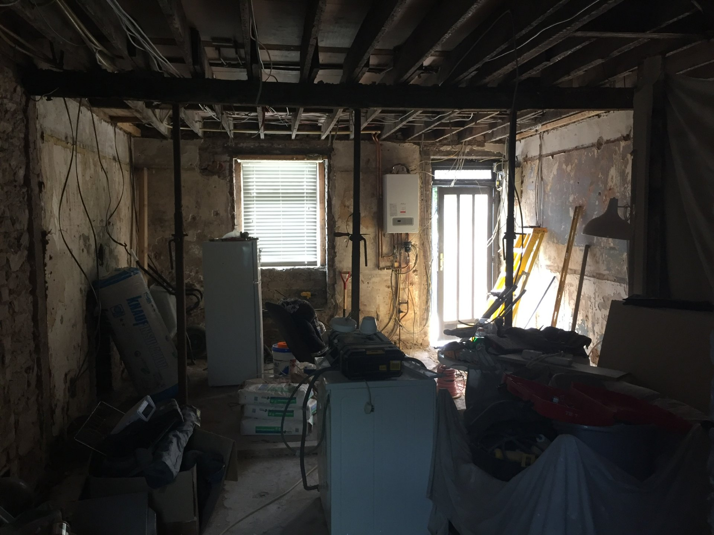
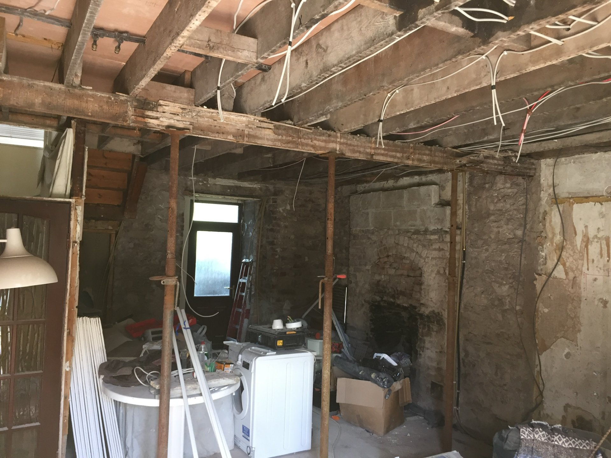
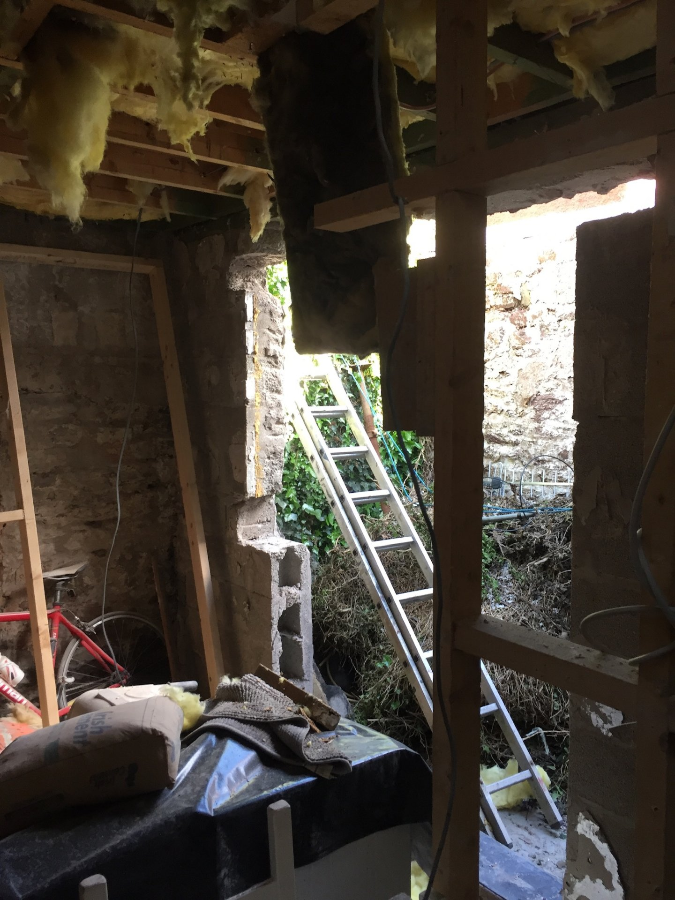
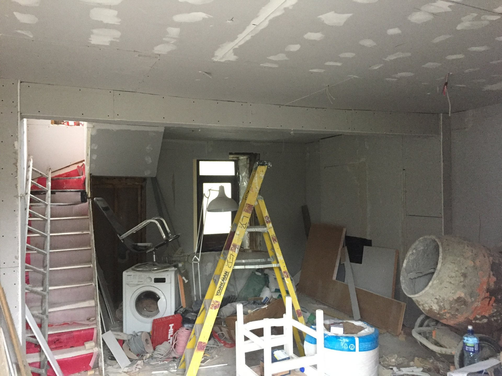
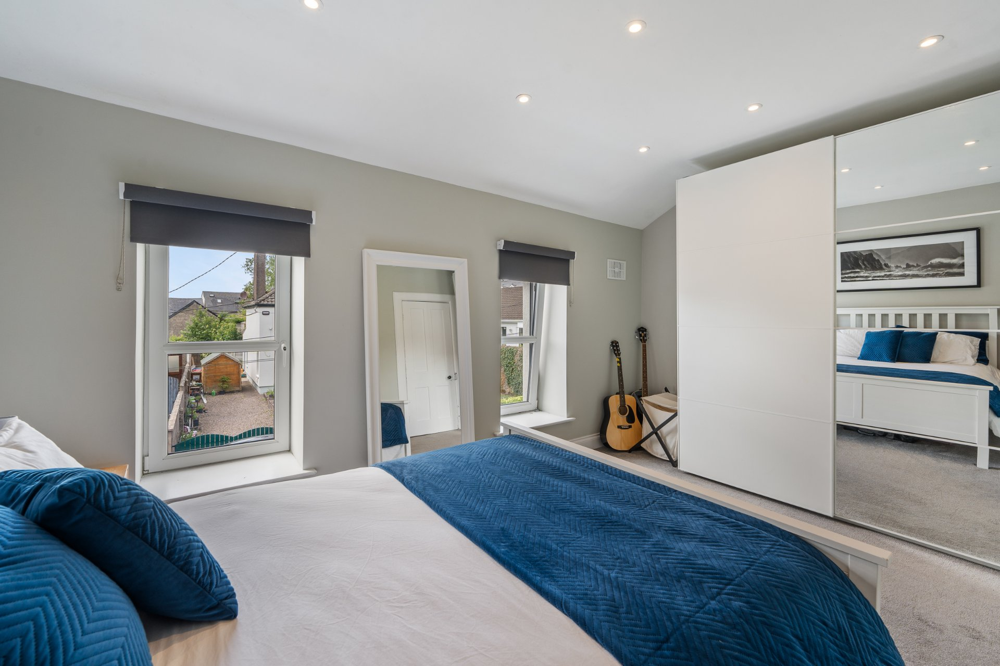
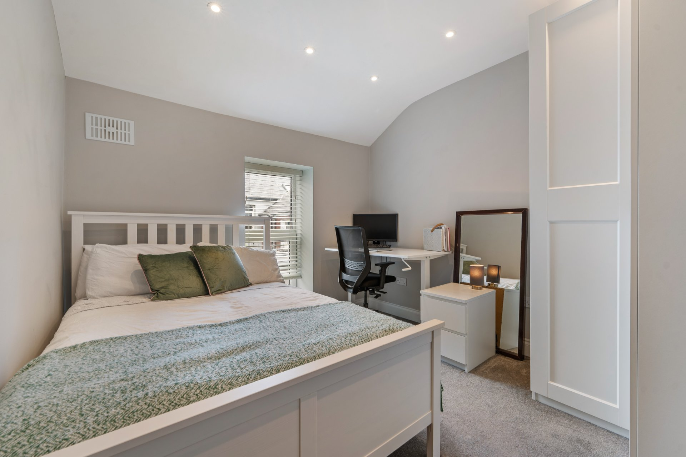
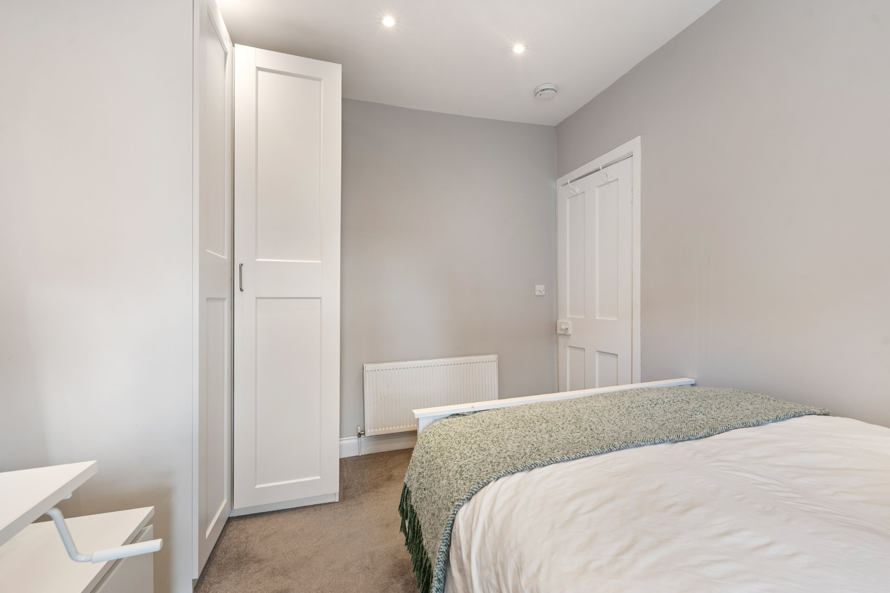

Before & After
The same terrace, transformed.
Drag the handle to wipe between the house as we found it and the finished renovation.


The Story
From the top floor to the whole home.
Conor first called to our office in St Luke’s about his 1970s house — he wanted to take the top floor and bring it up to date. We did that work, and a couple of years later he came back, this time ready to fully design and renovate the ground floor.
He’d already had an architect price the ground floor, and the budget had come back at roughly double what he’d planned to spend. We took the design on ourselves and made it work — and picked everything in the house with him, down to the light fittings, the tiles, the floors and the paint.
The result is the home in these photographs: gutted and rebuilt, designed and finished by one team.
It’s the same approach behind every full renovation we take on across Cork.

During the Build
Taken back to the bones, then rebuilt.



Key Details
What was involved.
- Service — Full house renovation
- Location — Alexandra Villas, Cork [area to confirm]
- Open-plan living and dining
- New navy shaker kitchen with oak worktops
- New tiled shower room
- New flooring throughout
- Redecoration and finishes throughout
- Rear courtyard
The list above reflects the finished home shown in the photographs. The full scope, timeline and any figures will be confirmed with the client before publishing. [awaiting client]
The Finished House
Alexandra Villas, room by room.





Real photography of this completed Cork renovation.
In Their Words
“I have had my whole house gutted and re-done by the renovation centre. The finished result is beautiful. More importantly, Adrian, Fiona, Kieran and the whole gang are brilliant to deal with. Can’t recommend enough.”
Conor Linehan, 2020
TRC Homes was formerly The Renovation Centre.
Ready to start?
Answer three quick questions and we’ll be in touch.